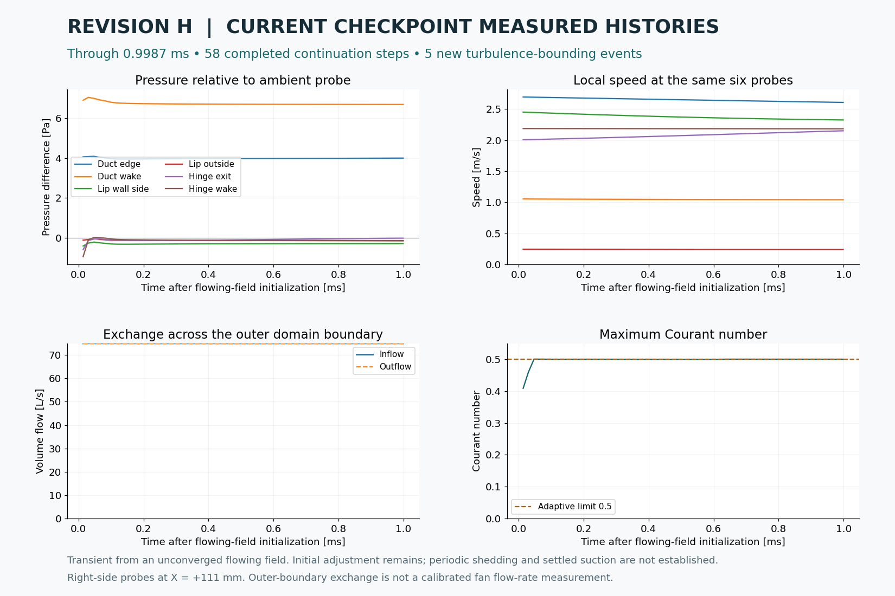

Air is already moving in the first frame.
This separate transient begins with the flowing field from steady-solver iteration 400. Its clock starts at zero for this sequence. It is not appended to the original quiet-start simulation.
The starting field is not converged. These are physical transient samples after switching from the steady solver; initial adjustment remains. The provisional mesh and timestep have not passed an independence study. Periodic shedding, settled lip suction and temperature benefits are not established.
Latest recorded flow
30 actual CFD states, from 0.0000 to 0.9987 ms after flowing-field initialization. 1.60 seconds of playback at 1103× slow motion, rounded to 30 fps, with a half-second final hold. No intermediate CFD states are generated. Open the latest MP4.

Recorded probe histories. A steady-solver iteration is not counted as elapsed fluid time.
Preserved checkpoints
How this run is initialized
The geometry, mesh and fan forcing match the original Revision H case. Velocity, pressure and turbulence fields are copied from the saved steady iterate; old transient history is not copied. The backward time scheme uses its native initial Euler fallback. The solver uses four CPU workers, 2 outer correction passes, an initial 12.5 µs step, a maximum 25 µs step and an adaptive Courant target of 0.5.
Arrows show sampled in-plane velocity at X = +111 mm. Colour limits are fixed within this sequence: speed 0–6 m/s, pressure ±12 Pa and vorticity ±2000/s. The original startup sequence retains its own scales. Grey areas are solid or unsampled; black lines are CAD surfaces.
Initialization provenance and settings · Mesh limitations · Dated solver status · Short correction-count comparison